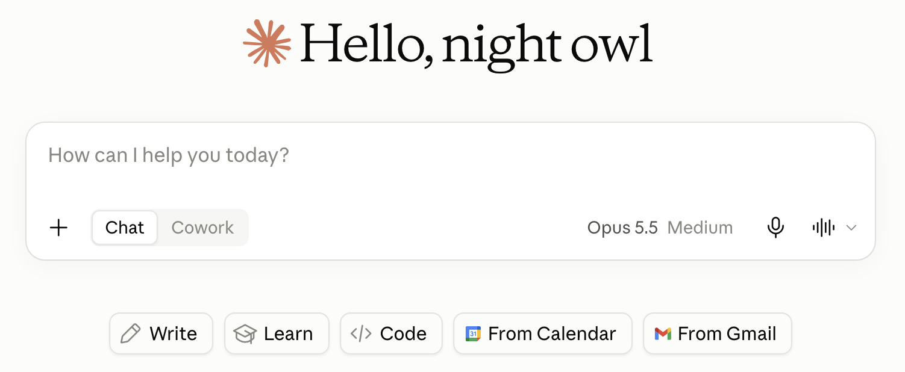
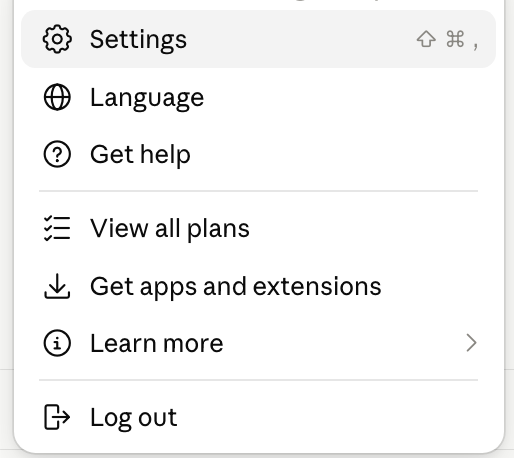
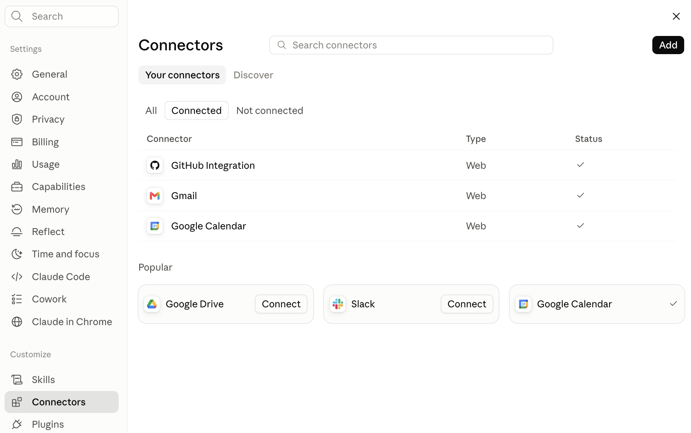
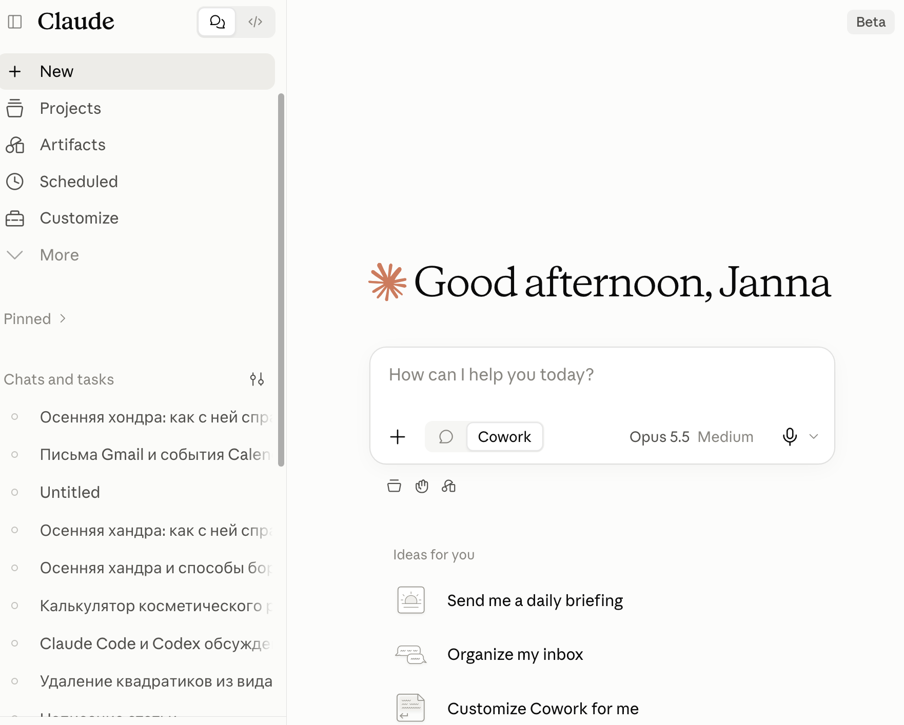
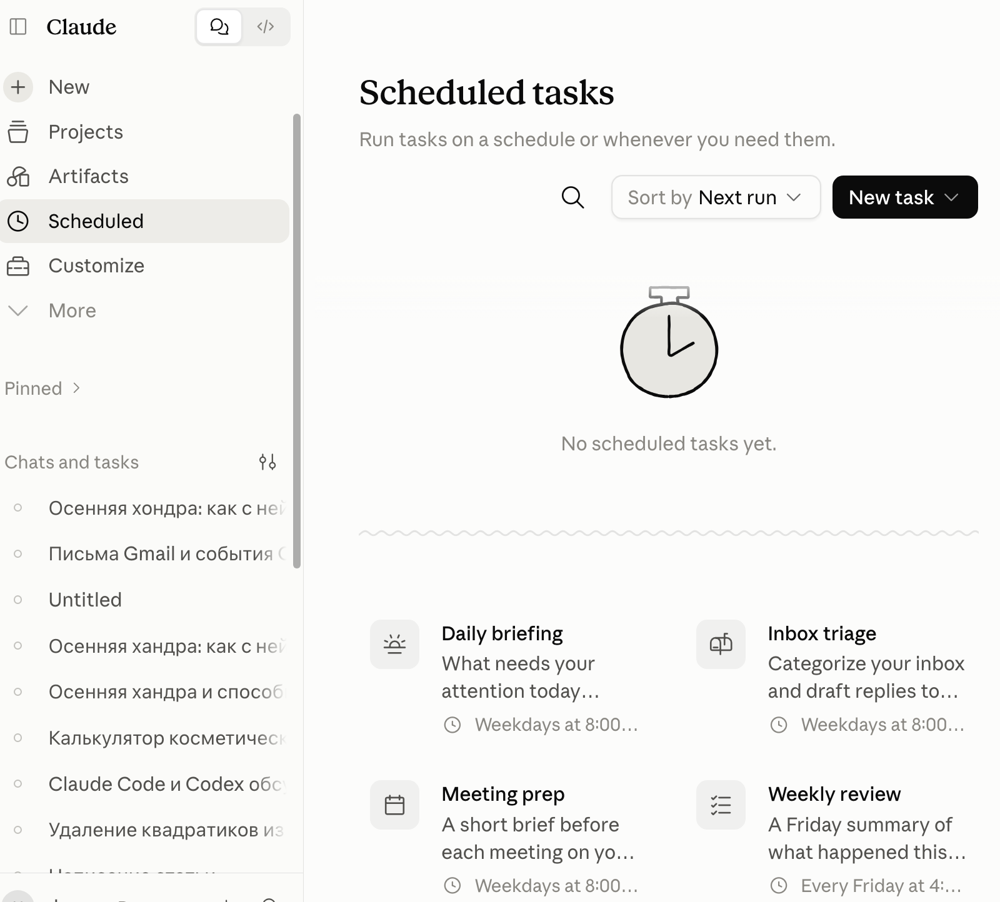
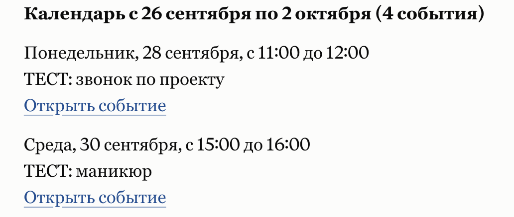

Содержание
Письма и встречи к 7:30. Поставь Клоду задачу по расписанию1. Убедись, что расписание доступно2. Подключи Gmail и Google Calendar3. Создай задачу на каждый понедельник4. Проверь, что будильник заведёнПример с пустой почтойЕсли кнопки или результата нетИсточникиClaude.ai · Серия 17
Письма и встречи к 7:30. Поставь Клоду задачу по расписанию
Один раз задай Клоду работу на понедельник: разобрать письма за выходные и собрать план недели из календаря. Когда подключены Gmail и Google Calendar, такая задача может выполняться, даже если ноутбук закрыт
Сначала проверь
1. Убедись, что расписание доступно
Задачи Scheduled доступны на платных тарифах Pro, Max, Team и Enterprise. Если под полем сообщения виден переключатель Chat / Cowork, у тебя прежний интерфейс: обычный Chat в нём не создаёт задачу Scheduled. В обновлённом интерфейсе, где этого переключателя нет, задачу можно поставить на расписание прямо из разговора

Свой тариф видно внизу меню профиля, рядом с именем. Все тарифы открываются пунктом View all plans. Путь к созданию Scheduled зависит от версии интерфейса

Результат: ты знаешь тариф и видишь, какой интерфейс открыт. Это помогает найти правильный путь к Scheduled
Без данных план будет пустым
2. Подключи Gmail и Google Calendar
В чате нажми +, открой Connectors и включи Gmail и Google Calendar по отдельности. Проверить подключения можно также через меню профиля Settings → Connectors. При первом обращении к сервису войди в нужный Google-аккаунт и подтверди подключение. На Team и Enterprise коннекторы сначала должен разрешить Owner или Primary Owner организации

Проверь каждый источник до создания расписания. Отправь в чат проверочный запрос ниже. Если писем или событий сейчас нет, это нормальный ответ: главное, чтобы Клод проверил источники и не придумал данные
Проверь подключённые Gmail и Google Calendar. Покажи письма за последние два дня: отправитель, тема и ссылка на письмо. Затем покажи события этой недели: дата, время и ссылка на событие. Если писем или событий нет, так и скажи. Если нет доступа к источнику, сообщи об этом отдельно. Ничего не отправляй и не меняй
Результат: Клод обращается к обоим источникам. Если он нашёл письма и события, указывает ссылки на них. Если выборка пустая, прямо сообщает об этом
Создание Scheduled
3. Создай задачу на каждый понедельник
В новом интерфейсе без переключателя Chat/Cowork вставь запрос в обычный разговор. В прежнем интерфейсе открой Cowork → Scheduled → New task → Create with Claude и дай Клоду тот же запрос. Если Cowork недоступен, обычный Chat пока не сохранит автоматическое расписание


Создай повторяющуюся задачу на каждый понедельник в 7:30 утра по моему часовому поясу. Проверь подключённый Gmail: найди важные письма, пришедшие в субботу и воскресенье. Проверь подключённый Google Calendar: найди события предстоящей недели. Собери короткий план недели: что требует ответа, какие встречи и сроки ждут меня, к чему подготовиться в среду. Укажи ссылки на найденные письма и события. Если писем или событий нет, прямо сообщи об этом. Если к Gmail или Calendar нет доступа, тоже скажи об этом вместо выдуманного плана. Письма не отправляй и события не меняй
Ответь на уточняющие вопросы Claude. Проверь название задачи, инструкцию, день, время и часовой пояс. Если всё верно, нажми Schedule
Результат: задача появилась в Scheduled. Сам отправленный запрос без подтверждения кнопкой Schedule не означает, что запуск сохранён
Проверка результата
4. Проверь, что будильник заведён
Открой Scheduled и найди свою задачу. Сверь ближайший запуск, понедельник, 7:30, часовой пояс и инструкцию. Здесь можно изменить задачу, поставить её на паузу или запустить вручную. Убедись, что Gmail и Google Calendar подключены
После первого запуска открой результат. Там должны быть найденные письма за выходные и события недели со ссылками либо честное сообщение, что за выбранный период ничего не найдено. Если источники не подключились, исправь доступ и повтори запуск. Задача выполняется на стороне Claude, поэтому ноутбук может быть закрыт
Результат: задача видна в Scheduled с правильным временем. После запуска план опирается на подключённые источники
Когда в почте и календаре пусто
Пример с пустой почтой
Для пробного запуска можно временно добавить в Google Calendar три вымышленных события на следующую неделю. Пометь каждое словом «ТЕСТ», чтобы потом быстро найти и удалить:
- Понедельник, 11:00 - ТЕСТ: звонок по проекту
- Среда, 15:00 - ТЕСТ: маникюр
- Пятница, 18:00 - ТЕСТ: оплатить коммунальные услуги

В своём ответе проверь, что ссылки открывают нужные события, и удали тестовые записи после проверки
Можно обойтись и без тестовых событий. Тогда пустой список встреч будет корректным результатом, если Claude действительно проверил календарь
Если что-то не сошлось
Если кнопки или результата нет
Нет Schedule в обычном чате
проверь платный тариф и версию интерфейса. Если виден переключатель Chat/Cowork, путь к Scheduled проходит через Cowork. Обычный Chat в прежнем интерфейсе не сохраняет автоматическое расписание
Задача создана, но нет писем или встреч
проверь, есть ли они за указанные дни, оба коннектора и нужный Google-аккаунт
В карточке неверное время
открой Scheduled и поправь день, время и часовой пояс
Проверено 26 сентября 2026
Источники
Бесплатный практикум
Будильник для Клода уже заведён. Дальше можно собрать своё
Задача по расписанию - это одно поручение. ИИ-Лагерь - бесплатный трёхдневный практикум, где показывают, как работать с Claude Code и Codex (это ИИ-агенты от Anthropic и OpenAI). С ними собирают то, что работает на тебя каждый день: свой сайт, бота в Telegram, который отвечает клиентам, калькулятор стоимости ремонта прямо на сайте. Навыки программиста не нужны: каждый шаг показывают на экране, ты повторяешь
На ИИ-Лагерь